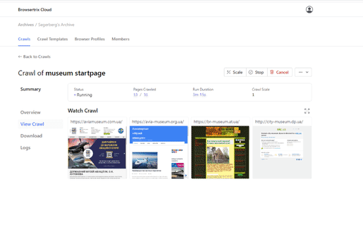
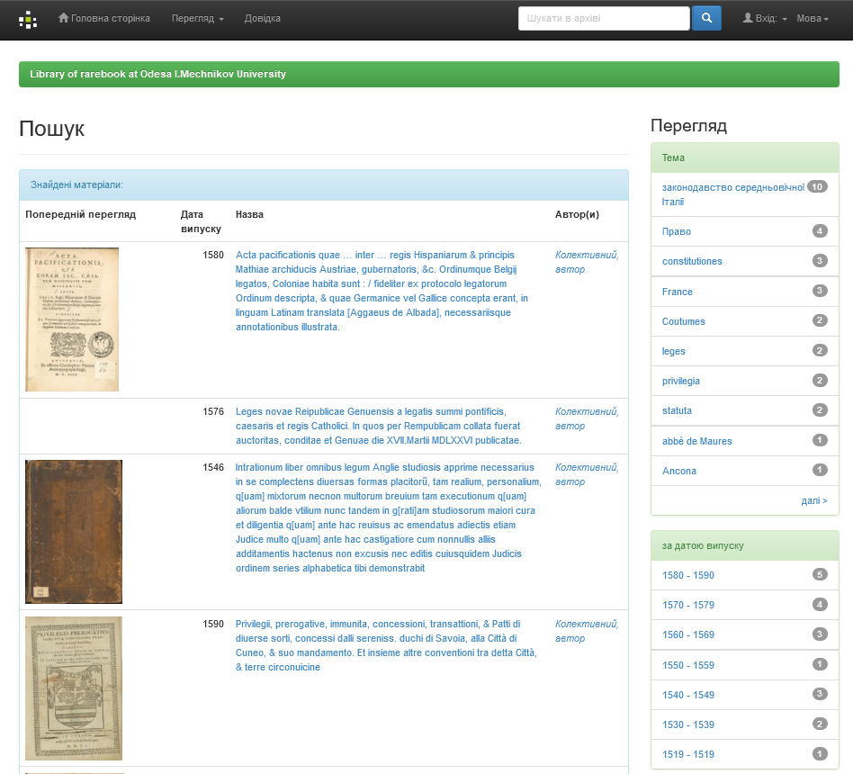
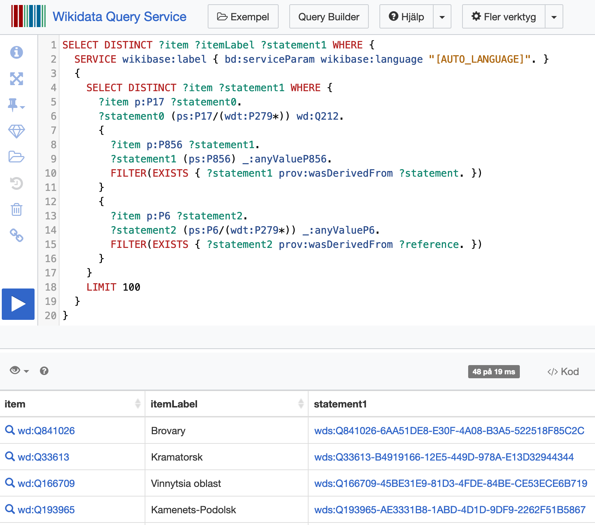
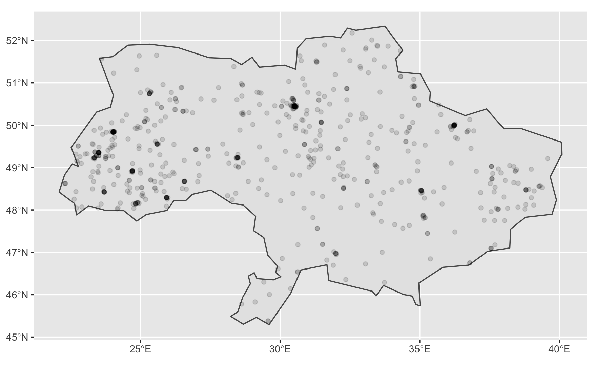

SUCHO
A global community of volunteers with the aim to help preserve Ukraine’s online cultural heritage
Andreas Segerberg
Roles in SUCHO
There is tasks suitable for anyone regardless of technology savviness.
The power is in the number of people
Link collectors
Teammates have edit access to our working spreadsheet.
But anyone can suggest new links via a form submission.

Internet Archive(rs)
Volunteers submit and make sure that the sites are thoroughly captured by the Wayback Machine, including sub-pages.

Manually recording
While many of sites can be captured by automated webcrawlers, some of them (and some special features such as virtual tours within a site) need a human being to navigate the site while recording it.

Metadata curators
A lot of archived content (e.g. PDFs, images, etc.) from Ukrainian repositories is uploaded to the Internet Archive. The Metadata group works with creating metadata records for SUCHOs Intenet Archive collection.

Browsertrixers
Newly submitted links go to the Browsertrix tab of our working spreadsheet (along with InternetArchive). Browsertrix is an automated web crawler using the open-source Webrecorder software, and volunteers run it on their laptops, on servers they manage, or even on Raspberry Pi devices!
Scrapers
Some sites, like library catalogs and repositories, don’t have URLs that an automated web crawler can easily follow, so the scraping group writes custom code to capture the contents of those sites. There are also special sub-groups of scraping with channels on Slack, like #irbis.
Situation monitoring
Monitors the development of the War and helps prioritize what content that needs to saved first
Lite Statistik

Pages saved to Wayback
40+ TB of scanned documents, artworks and other digital materials from 4,500+ websites of Ukrainian museums, libraries and archives.

10+ TB of archived webcontent from 6,500+ websites of Ukrainian authorities and civil organizations
21+ TB | 740 million under the top domain .ua saved
17.35 TB | 377 million resources (news) saved from ukr.net
5.29 TB | 73 thousand (tv-broadcasts) from suspilne
Lessons learned
Open data is essential
zonefiles
A zone file contains DNS information about a particular domain name, for example the names of the webserver for the domain and, if applicable, their respective IP-addresses. The data in a zone is technical information required for the domain name to function. As such, a zone file does not contain any confidential information.
- Domainsproject - 1.7 billion domains
wikidata
open streetmaps
686 museums located inside Ukraine
Next steps
- Coordination of donations
- Partnership (storage/management)
Thanks